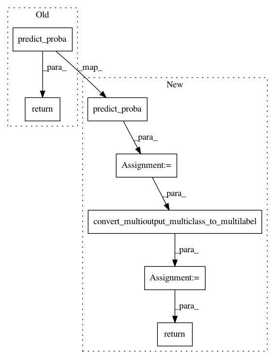

8ec7f43e04b4dc639bce41cc2213f9c92f41d59a,autosklearn/evaluation/abstract_evaluator.py,MyDummyClassifier,predict_proba,#MyDummyClassifier#Any#Any#,40
Before Change
def predict_proba(self, X, batch_size=1000):
new_X = np.ones((X.shape[0], 1))
return super(MyDummyClassifier, self).predict_proba(new_X)
def estimator_supports_iterative_fit(self):
return False
After Change
def predict_proba(self, X, batch_size=1000):
new_X = np.ones((X.shape[0], 1))
probas = super(MyDummyClassifier, self).predict_proba(new_X)
probas = convert_multioutput_multiclass_to_multilabel(probas)
return probas
def estimator_supports_iterative_fit(self):
return False
In pattern: SUPERPATTERN
Frequency: 4
Non-data size: 7
Instances
Project Name: automl/auto-sklearn
Commit Name: 8ec7f43e04b4dc639bce41cc2213f9c92f41d59a
Time: 2016-01-14
Author: feurerm@informatik.uni-freiburg.de
File Name: autosklearn/evaluation/abstract_evaluator.py
Class Name: MyDummyClassifier
Method Name: predict_proba
Project Name: automl/auto-sklearn
Commit Name: 8ec7f43e04b4dc639bce41cc2213f9c92f41d59a
Time: 2016-01-14
Author: feurerm@informatik.uni-freiburg.de
File Name: autosklearn/pipeline/components/classification/extra_trees.py
Class Name: ExtraTreesClassifier
Method Name: predict_proba
Project Name: automl/auto-sklearn
Commit Name: 8ec7f43e04b4dc639bce41cc2213f9c92f41d59a
Time: 2016-01-14
Author: feurerm@informatik.uni-freiburg.de
File Name: autosklearn/pipeline/components/classification/random_forest.py
Class Name: RandomForest
Method Name: predict_proba
Project Name: automl/auto-sklearn
Commit Name: 8ec7f43e04b4dc639bce41cc2213f9c92f41d59a
Time: 2016-01-14
Author: feurerm@informatik.uni-freiburg.de
File Name: autosklearn/pipeline/components/classification/decision_tree.py
Class Name: DecisionTree
Method Name: predict_proba